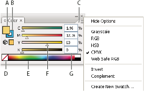

Color panel overview
You
use the Color panel (Window > Color) to apply color
to an object’s fill and stroke, and also to edit and mix colors.
The Color panel can display color values using different color models.
By default, only the most commonly used options are visible in the
Color panel.

Color panel
- A.
- Fill color
- B.
- Stroke color
- C.
- panel menu
- D.
- None box
- E.
- Color spectrum bar
- F.
- Color slider
- G.
- Text box for a color component
 Change the color model
Change the color model Select Grayscale, RGB, HSB, CMYK,
or Web Safe RGB from the panel menu.
Select Grayscale, RGB, HSB, CMYK,
or Web Safe RGB from the panel menu.